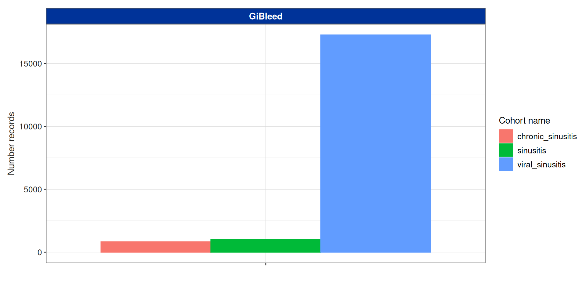
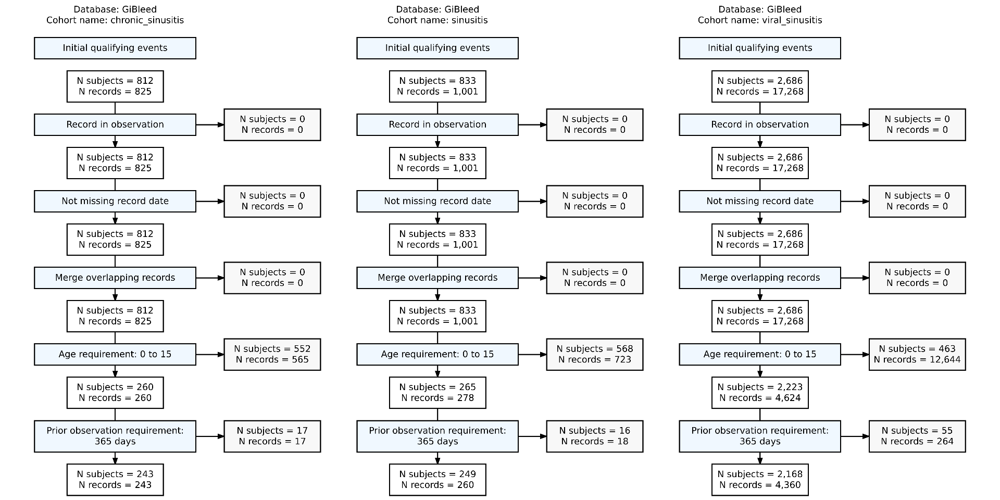
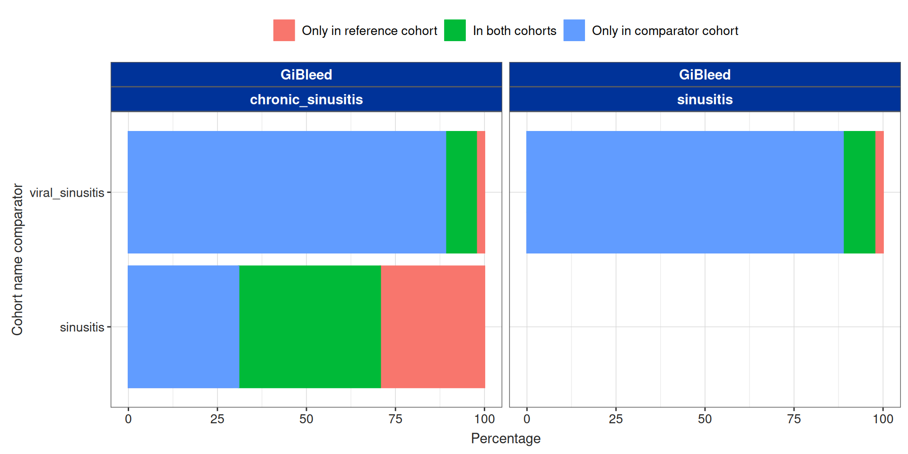
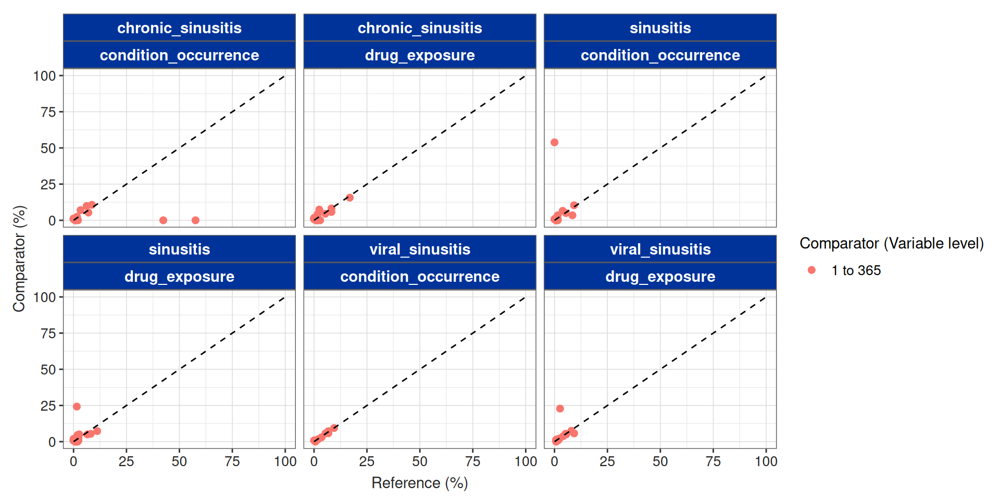

install.packages("CohortCharacteristics")CohortCharacteristics
A R package to Characterise cohorts
CohortCharacteristics
Website
Cohort characteristics is on cran:
You can also install the development version from our github repo:
The documentation and vignettes of the packages can be found in our page: https://darwin-eu.github.io/CohortCharacteristics/
Let’s get started
Let’s get started
First we will create a cdm_reference from GiBleed database:
── # OMOP CDM reference (duckdb) of GiBleed ────────────────────────────────────────────────────────────────────────────• omop tables: care_site, cdm_source, concept, concept_ancestor, concept_class, concept_relationship, concept_synonym,
condition_era, condition_occurrence, cost, death, device_exposure, domain, dose_era, drug_era, drug_exposure,
drug_strength, fact_relationship, location, measurement, metadata, note, note_nlp, observation, observation_period,
payer_plan_period, person, procedure_occurrence, provider, relationship, source_to_concept_map, specimen, visit_detail,
visit_occurrence, vocabulary• cohort tables: -• achilles tables: -• other tables: -Workflow
We have three types of functions:
summarise: these functions produce an standardised output to summarise a cohort. This standard output is called
summarised_result.plot: these functions produce plots (currently, only ggplot, but working to implement plotly) from a
summarised_resultobject.table: these functions produce tables (gt and flextable) from a
summarised_resultobject.
Contents
Set the style
Summarise cohort entries
We can start instantiating a cohort:
# A tibble: 3 × 3
cohort_definition_id number_records number_subjects
<int> <int> <int>
1 1 825 812
2 2 1001 833
3 3 17268 2686Summarise cohort entries
Summarise cohort entries

Summarise cohort entries
Now we can apply some inclusion criteria:
Summarise cohort entries
This data has been stored in the attrition attribute
Rows: 18
Columns: 7
$ cohort_definition_id <int> 1, 1, 1, 1, 1, 1, 2, 2, 2, 2, 2, 2, 3, 3, 3, 3, 3, 3
$ number_records <int> 825, 825, 825, 825, 260, 243, 1001, 1001, 1001, 1001, 278, 260, 17268, 17268, 17268, 1726…
$ number_subjects <int> 812, 812, 812, 812, 260, 243, 833, 833, 833, 833, 265, 249, 2686, 2686, 2686, 2686, 2223,…
$ reason_id <int> 1, 2, 3, 4, 5, 6, 1, 2, 3, 4, 5, 6, 1, 2, 3, 4, 5, 6
$ reason <chr> "Initial qualifying events", "Record in observation", "Not missing record date", "Merge o…
$ excluded_records <int> 0, 0, 0, 0, 565, 17, 0, 0, 0, 0, 723, 18, 0, 0, 0, 0, 12644, 264
$ excluded_subjects <int> 0, 0, 0, 0, 552, 17, 0, 0, 0, 0, 568, 16, 0, 0, 0, 0, 463, 55Summarise cohort entries
| Reason |
Variable name
|
|||
|---|---|---|---|---|
| number_records | number_subjects | excluded_records | excluded_subjects | |
| GiBleed; chronic_sinusitis | ||||
| Initial qualifying events | 825 | 812 | 0 | 0 |
| Record in observation | 825 | 812 | 0 | 0 |
| Not missing record date | 825 | 812 | 0 | 0 |
| Merge overlapping records | 825 | 812 | 0 | 0 |
| Age requirement: 0 to 15 | 260 | 260 | 565 | 552 |
| Prior observation requirement: 365 days | 243 | 243 | 17 | 17 |
| GiBleed; sinusitis | ||||
| Initial qualifying events | 1,001 | 833 | 0 | 0 |
| Record in observation | 1,001 | 833 | 0 | 0 |
| Not missing record date | 1,001 | 833 | 0 | 0 |
| Merge overlapping records | 1,001 | 833 | 0 | 0 |
| Age requirement: 0 to 15 | 278 | 265 | 723 | 568 |
| Prior observation requirement: 365 days | 260 | 249 | 18 | 16 |
| GiBleed; viral_sinusitis | ||||
| Initial qualifying events | 17,268 | 2,686 | 0 | 0 |
| Record in observation | 17,268 | 2,686 | 0 | 0 |
| Not missing record date | 17,268 | 2,686 | 0 | 0 |
| Merge overlapping records | 17,268 | 2,686 | 0 | 0 |
| Age requirement: 0 to 15 | 4,624 | 2,223 | 12,644 | 463 |
| Prior observation requirement: 365 days | 4,360 | 2,168 | 264 | 55 |
Summarise cohort entries

Summarise cohort overlap
It can be useful to identify the individuals that are in two cohorts:
| Cohort name reference | Cohort name comparator | Estimate name |
Variable name
|
||
|---|---|---|---|---|---|
| Only in reference cohort | In both cohorts | Only in comparator cohort | |||
| GiBleed | |||||
| chronic_sinusitis | sinusitis | N (%) | 103 (29.26%) | 140 (39.77%) | 109 (30.97%) |
| viral_sinusitis | N (%) | 51 (2.30%) | 192 (8.65%) | 1,976 (89.05%) | |
| sinusitis | viral_sinusitis | N (%) | 52 (2.34%) | 197 (8.87%) | 1,971 (88.78%) |
Summarise cohort overlap

Summarise cohort overlap
By default the overlap is done at the subject_id level, but we can customise this and use more columns:
| Cohort name reference | Cohort name comparator | Estimate name |
Variable name
|
||
|---|---|---|---|---|---|
| Only in reference cohort | In both cohorts | Only in comparator cohort | |||
| GiBleed | |||||
| chronic_sinusitis | sinusitis | N (%) | 243 (48.31%) | 0 (0.00%) | 260 (51.69%) |
| viral_sinusitis | N (%) | 243 (5.28%) | 0 (0.00%) | 4,360 (94.72%) | |
| sinusitis | viral_sinusitis | N (%) | 260 (5.63%) | 0 (0.00%) | 4,360 (94.37%) |
Summarise cohort characteristics
To get summary of the characteristics for your cohort you can use summariseCharacteristics():
Summarise cohort characteristics
| CDM name | Variable name | Variable level | Estimate name |
Cohort name
|
||
|---|---|---|---|---|---|---|
| chronic_sinusitis | sinusitis | viral_sinusitis | ||||
| GiBleed | Number records | – | N | 243 | 260 | 4,360 |
| Number subjects | – | N | 243 | 249 | 2,168 | |
| Cohort start date | – | Median [Q25 - Q75] | 1969-04-01 [1957-12-24 - 1980-08-02] | 1970-10-06 [1957-09-05 - 1981-07-24] | 1969-04-22 [1957-12-03 - 1979-05-19] | |
| Range | 1911-12-12 to 1998-09-29 | 1911-10-31 to 1998-09-01 | 1910-10-21 to 1999-11-02 | |||
| Cohort end date | – | Median [Q25 - Q75] | 1969-10-19 [1958-09-07 - 1981-06-23] | 1971-01-08 [1957-10-31 - 1981-10-30] | 1969-05-08 [1957-12-15 - 1979-06-01] | |
| Range | 1911-12-12 to 2011-09-26 | 1912-01-23 to 1998-10-13 | 1910-11-04 to 1999-11-23 | |||
| Age | – | Median [Q25 - Q75] | 8 [4 - 12] | 8 [4 - 12] | 8 [4 - 12] | |
| Mean (SD) | 7.92 (4.37) | 8.10 (4.32) | 7.92 (4.30) | |||
| Range | 1 to 15 | 1 to 15 | 1 to 15 | |||
| Sex | Female | N (%) | 124 (51.03%) | 142 (54.62%) | 2,206 (50.60%) | |
| Male | N (%) | 119 (48.97%) | 118 (45.38%) | 2,154 (49.40%) | ||
| Prior observation | – | Median [Q25 - Q75] | 3,052 [1,657 - 4,528] | 3,118 [1,795 - 4,487] | 3,068 [1,714 - 4,407] | |
| Mean (SD) | 3,079.56 (1,600.95) | 3,142.19 (1,562.49) | 3,076.48 (1,574.41) | |||
| Range | 388 to 5,832 | 398 to 5,815 | 365 to 5,842 | |||
| Future observation | – | Median [Q25 - Q75] | 17,643 [13,899 - 22,168] | 17,557 [13,719 - 22,300] | 17,884 [14,241 - 21,779] | |
| Mean (SD) | 18,330.67 (5,753.00) | 18,518.75 (6,356.40) | 18,457.77 (5,674.75) | |||
| Range | 6,986 to 39,045 | 7,014 to 39,087 | 6,530 to 39,020 | |||
| Days in cohort | – | Median [Q25 - Q75] | 1 [1 - 1] | 57 [36 - 102] | 15 [8 - 22] | |
| Mean (SD) | 317.64 (1,762.31) | 79.59 (62.56) | 15.02 (5.68) | |||
| Range | 1 to 13,234 | 15 to 428 | 7 to 23 | |||
| Days to next record | – | Median [Q25 - Q75] | – | 1,266 [854 - 2,302] | 1,115 [488 - 1,957] | |
| Mean (SD) | – | 1,679.00 (1,078.99) | 1,353.50 (1,058.41) | |||
| Range | – | 636 to 4,072 | 35 to 5,227 | |||
Summarise cohort characteristics
By default we have seen how demographics are characterised, by we can do more.
CDM name
|
|||||
|---|---|---|---|---|---|
GiBleed
|
|||||
| Variable name | Variable level | Estimate name |
Cohort name
|
||
| chronic_sinusitis | sinusitis | viral_sinusitis | |||
| Number records | – | N | 243 | 260 | 4,360 |
| Number subjects | – | N | 243 | 249 | 2,168 |
| Cohort start date | – | Median [Q25 - Q75] | 1969-04-01 [1957-12-24 - 1980-08-02] | 1970-10-06 [1957-09-05 - 1981-07-24] | 1969-04-22 [1957-12-03 - 1979-05-19] |
| Range | 1911-12-12 to 1998-09-29 | 1911-10-31 to 1998-09-01 | 1910-10-21 to 1999-11-02 | ||
| Cohort end date | – | Median [Q25 - Q75] | 1969-10-19 [1958-09-07 - 1981-06-23] | 1971-01-08 [1957-10-31 - 1981-10-30] | 1969-05-08 [1957-12-15 - 1979-06-01] |
| Range | 1911-12-12 to 2011-09-26 | 1912-01-23 to 1998-10-13 | 1910-11-04 to 1999-11-23 | ||
| Age | – | Median [Q25 - Q75] | 8 [4 - 12] | 8 [4 - 12] | 8 [4 - 12] |
| Mean (SD) | 7.92 (4.37) | 8.10 (4.32) | 7.92 (4.30) | ||
| Range | 1 to 15 | 1 to 15 | 1 to 15 | ||
| Age group | 0 to 4 | N (%) | 70 (28.81%) | 70 (26.92%) | 1,180 (27.06%) |
| 5 to 9 | N (%) | 72 (29.63%) | 78 (30.00%) | 1,471 (33.74%) | |
| 10 to 14 | N (%) | 90 (37.04%) | 96 (36.92%) | 1,424 (32.66%) | |
| 15 or above | N (%) | 11 (4.53%) | 16 (6.15%) | 285 (6.54%) | |
| Sex | Female | N (%) | 124 (51.03%) | 142 (54.62%) | 2,206 (50.60%) |
| Male | N (%) | 119 (48.97%) | 118 (45.38%) | 2,154 (49.40%) | |
| Prior observation | – | Median [Q25 - Q75] | 3,052 [1,657 - 4,528] | 3,118 [1,795 - 4,487] | 3,068 [1,714 - 4,407] |
| Mean (SD) | 3,079.56 (1,600.95) | 3,142.19 (1,562.49) | 3,076.48 (1,574.41) | ||
| Range | 388 to 5,832 | 398 to 5,815 | 365 to 5,842 | ||
| Future observation | – | Median [Q25 - Q75] | 17,643 [13,899 - 22,168] | 17,557 [13,719 - 22,300] | 17,884 [14,241 - 21,779] |
| Mean (SD) | 18,330.67 (5,753.00) | 18,518.75 (6,356.40) | 18,457.77 (5,674.75) | ||
| Range | 6,986 to 39,045 | 7,014 to 39,087 | 6,530 to 39,020 | ||
| Days in cohort | – | Median [Q25 - Q75] | 1 [1 - 1] | 57 [36 - 102] | 15 [8 - 22] |
| Mean (SD) | 317.64 (1,762.31) | 79.59 (62.56) | 15.02 (5.68) | ||
| Range | 1 to 13,234 | 15 to 428 | 7 to 23 | ||
| Days to next record | – | Median [Q25 - Q75] | – | 1,266 [854 - 2,302] | 1,115 [488 - 1,957] |
| Mean (SD) | – | 1,679.00 (1,078.99) | 1,353.50 (1,058.41) | ||
| Range | – | 636 to 4,072 | 35 to 5,227 | ||
Summarise cohort characteristics
We can stratify the characterisation using columns, for example we will characterise the cohort sinusitis by sex.
| Variable name | Variable level | Estimate name |
Sex
|
||
|---|---|---|---|---|---|
| overall | Female | Male | |||
| Number records | – | N | 260 | 142 | 118 |
| Number subjects | – | N | 249 | 136 | 113 |
| Cohort start date | – | Median [Q25 - Q75] | 1970-10-06 [1957-09-05 - 1981-07-24] | 1968-07-14 [1957-08-19 - 1981-01-18] | 1972-09-21 [1958-01-04 - 1982-02-27] |
| Range | 1911-10-31 to 1998-09-01 | 1912-12-29 to 1998-09-01 | 1911-10-31 to 1997-05-28 | ||
| Cohort end date | – | Median [Q25 - Q75] | 1971-01-08 [1957-10-31 - 1981-10-30] | 1968-08-30 [1957-10-14 - 1981-03-30] | 1973-02-16 [1958-02-21 - 1982-07-11] |
| Range | 1912-01-23 to 1998-10-13 | 1913-08-31 to 1998-10-13 | 1912-01-23 to 1997-07-02 | ||
| Age | – | Median [Q25 - Q75] | 8 [4 - 12] | 7 [4 - 11] | 9 [5 - 12] |
| Mean (SD) | 8.10 (4.32) | 7.63 (4.43) | 8.68 (4.12) | ||
| Range | 1 to 15 | 1 to 15 | 1 to 15 | ||
| Age group | 0 to 4 | N (%) | 70 (26.92%) | 46 (32.39%) | 24 (20.34%) |
| 5 to 9 | N (%) | 78 (30.00%) | 41 (28.87%) | 37 (31.36%) | |
| 10 to 14 | N (%) | 96 (36.92%) | 45 (31.69%) | 51 (43.22%) | |
| 15 or above | N (%) | 16 (6.15%) | 10 (7.04%) | 6 (5.08%) | |
| Sex | Female | N (%) | 142 (54.62%) | 142 (100.00%) | – |
| Male | N (%) | 118 (45.38%) | – | 118 (100.00%) | |
| Prior observation | – | Median [Q25 - Q75] | 3,118 [1,795 - 4,487] | 2,716 [1,605 - 4,279] | 3,402 [2,032 - 4,602] |
| Mean (SD) | 3,142.19 (1,562.49) | 2,975.84 (1,598.37) | 3,342.37 (1,500.52) | ||
| Range | 398 to 5,815 | 398 to 5,815 | 517 to 5,766 | ||
| Future observation | – | Median [Q25 - Q75] | 17,557 [13,719 - 22,300] | 18,181 [13,841 - 22,321] | 16,902 [13,182 - 22,228] |
| Mean (SD) | 18,518.75 (6,356.40) | 18,904.92 (6,314.96) | 18,054.03 (6,401.80) | ||
| Range | 7,014 to 39,087 | 7,014 to 38,795 | 7,777 to 39,087 | ||
| Days in cohort | – | Median [Q25 - Q75] | 57 [36 - 102] | 57 [36 - 92] | 64 [36 - 120] |
| Mean (SD) | 79.59 (62.56) | 73.57 (56.46) | 86.84 (68.73) | ||
| Range | 15 to 428 | 15 to 323 | 15 to 428 | ||
| Days to next record | – | Median [Q25 - Q75] | 1,266 [854 - 2,302] | 1,396 [810 - 1,878] | 1,266 [920 - 2,692] |
| Mean (SD) | 1,679.00 (1,078.99) | 1,455.17 (780.82) | 1,947.60 (1,408.23) | ||
| Range | 636 to 4,072 | 636 to 2,648 | 788 to 4,072 | ||
Summarise cohort characteristics
We can also summarise the prior conditions. We will need either a codelist of conditions or a prior instantiated cohort. In this case we will create a cohort:
- From now on we will use the arguments
demographics = FALSEandcounts = FALSEto only focus on the part of the characterisation of interest.
Summarise cohort characteristics
CDM name
|
|||||
|---|---|---|---|---|---|
GiBleed
|
|||||
| Variable name | Variable level | Estimate name |
Cohort name
|
||
| chronic_sinusitis | sinusitis | viral_sinusitis | |||
| Conditions any time prior | Diabetes | N (%) | 90 (37.04%) | 104 (40.00%) | 1,560 (35.78%) |
| Cardiovascular disease | N (%) | 148 (60.91%) | 171 (65.77%) | 2,746 (62.98%) | |
| Hypertension | N (%) | 94 (38.68%) | 110 (42.31%) | 1,910 (43.81%) | |
Summarise cohort characteristics
Now we will add the number of visit in the prior year:
CDM name
|
|||||
|---|---|---|---|---|---|
GiBleed
|
|||||
| Variable name | Variable level | Estimate name |
Cohort name
|
||
| chronic_sinusitis | sinusitis | viral_sinusitis | |||
| Visits in the prior year | – | Median [Q25 - Q75] | 0.00 [0.00 - 0.00] | 0.00 [0.00 - 0.00] | 0.00 [0.00 - 0.00] |
| Mean (SD) | 0.00 (0.06) | 0.00 (0.06) | 0.00 (0.05) | ||
| Range | 0.00 to 1.00 | 0.00 to 1.00 | 0.00 to 1.00 | ||
Summarise cohort characteristics
We could also include time to a prior vaccination, in this case we will define vaccination using a conceptSet:
CDM name
|
|||||
|---|---|---|---|---|---|
GiBleed
|
|||||
| Variable name | Variable level | Estimate name |
Cohort name
|
||
| chronic_sinusitis | sinusitis | viral_sinusitis | |||
| Time to prior vaccines | Vaccine2 | Median [Q25 - Q75] | -1,399.00 [-2,740.50 - -707.25] | -1,572.00 [-2,762.00 - -710.75] | -1,426.50 [-2,610.00 - -722.25] |
| Mean (SD) | -1,710.87 (1,164.27) | -1,769.52 (1,197.58) | -1,695.03 (1,149.73) | ||
| Range | -4,023.00 to -18.00 | -4,009.00 to -1.00 | -4,239.00 to -1.00 | ||
| Vaccine1 | Median [Q25 - Q75] | -1,372.00 [-2,048.75 - -600.00] | -1,520.00 [-2,156.50 - -765.00] | -1,291.00 [-2,404.00 - -583.00] | |
| Mean (SD) | -1,512.57 (1,078.75) | -1,681.07 (1,206.77) | -1,607.13 (1,270.50) | ||
| Range | -5,501.00 to -91.00 | -5,438.00 to -78.00 | -5,457.00 to -5.00 | ||
Summarise cohort characteristics
We have seen that by default the estimates that are calculated are:
countandpercentagefor binary and categorical variables.min,q25,median,q75,max,meanandsdfor numeric, integer and date variables.
But this can be changed using the estimates argument.
Summarise cohort characteristics
result <- cdm$my_cohort |>
summariseCharacteristics(
demographics = FALSE, counts = FALSE,
conceptIntersectDays = list(
"Time to prior vaccines" = list(
conceptSet = list(vaccine1 = 1127433L, vaccine2 = 40213160L),
window = c(-Inf, -1),
order = "last"
)
),
estimates = list(concept_intersect_days = c("q25", "median", "q75"))
)
CDM name
|
|||||
|---|---|---|---|---|---|
GiBleed
|
|||||
| Variable name | Variable level | Estimate name |
Cohort name
|
||
| chronic_sinusitis | sinusitis | viral_sinusitis | |||
| Time to prior vaccines | Vaccine2 | Median [Q25 - Q75] | -1,399.00 [-2,740.50 - -707.25] | -1,572.00 [-2,762.00 - -710.75] | -1,426.50 [-2,610.00 - -722.25] |
| Vaccine1 | Median [Q25 - Q75] | -1,372.00 [-2,048.75 - -600.00] | -1,520.00 [-2,156.50 - -765.00] | -1,291.00 [-2,404.00 - -583.00] | |
Summarise cohort characteristics
Summarise large scale characteristics
Large scale characterisation is very useful to characterise cohorts in a data driven way. You will just need to define tables and windows.
The tables need to be classified into two categories:
event: We are only interest whether the ‘start’ of the event is within the window of interest (e.g. start of the drug ->
drug_exposure_start_date, start of the condition ->condition_start_date).episode: We are interested to see whether the any day within the ‘start’ and the ‘end’ of the episode is within the window of interest.
Summarise large scale characteristics
Summarise large scale characteristics
Summarise large scale characteristics
Summarise large scale characteristics
Summarise large scale characteristics
Summarise large scale characteristics
Cohort name
|
||||||||||||
|---|---|---|---|---|---|---|---|---|---|---|---|---|
chronic_sinusitis
|
sinusitis
|
viral_sinusitis
|
||||||||||
Window
|
||||||||||||
-365 to -1
|
1 to 365
|
-365 to -1
|
1 to 365
|
-365 to -1
|
1 to 365
|
|||||||
Table name
|
||||||||||||
condition_occurrence
|
drug_exposure
|
condition_occurrence
|
drug_exposure
|
condition_occurrence
|
drug_exposure
|
condition_occurrence
|
drug_exposure
|
condition_occurrence
|
drug_exposure
|
condition_occurrence
|
drug_exposure
|
|
| Top |
Type
|
|||||||||||
| event | episode | event | episode | event | episode | event | episode | event | episode | event | episode | |
| 1 | Sinusitis (4283893) 140 (57.6%) |
Amoxicillin 250 MG / Clavulanate 125 MG Oral Tablet (1713671) 41 (16.9%) |
Viral sinusitis (40481087) 26 (10.7%) |
Amoxicillin 250 MG / Clavulanate 125 MG Oral Tablet (1713671) 38 (15.6%) |
Viral sinusitis (40481087) 24 (9.2%) |
poliovirus vaccine, inactivated (40213160) 29 (11.2%) |
Chronic sinusitis (257012) 140 (53.9%) |
Amoxicillin 250 MG / Clavulanate 125 MG Oral Tablet (1713671) 63 (24.2%) |
Viral sinusitis (40481087) 413 (9.5%) |
poliovirus vaccine, inactivated (40213160) 404 (9.3%) |
Viral sinusitis (40481087) 410 (9.4%) |
Amoxicillin 250 MG / Clavulanate 125 MG Oral Tablet (1713671) 996 (22.8%) |
| 2 | Acute bacterial sinusitis (4294548) 103 (42.4%) |
Aspirin 81 MG Oral Tablet (19059056) 20 (8.2%) |
Acute viral pharyngitis (4112343) 24 (9.9%) |
poliovirus vaccine, inactivated (40213160) 20 (8.2%) |
Otitis media (372328) 22 (8.5%) |
Aspirin 81 MG Oral Tablet (19059056) 21 (8.1%) |
Viral sinusitis (40481087) 27 (10.4%) |
poliovirus vaccine, inactivated (40213160) 19 (7.3%) |
Acute viral pharyngitis (4112343) 295 (6.8%) |
Aspirin 81 MG Oral Tablet (19059056) 346 (7.9%) |
Acute viral pharyngitis (4112343) 315 (7.2%) |
Aspirin 81 MG Oral Tablet (19059056) 326 (7.5%) |
| 3 | Viral sinusitis (40481087) 21 (8.6%) |
poliovirus vaccine, inactivated (40213160) 20 (8.2%) |
Acute bronchitis (260139) 17 (7.0%) |
Acetaminophen 325 MG Oral Tablet (1127433) 18 (7.4%) |
Acute viral pharyngitis (4112343) 14 (5.4%) |
Acetaminophen 160 MG Oral Tablet (1127078) 17 (6.5%) |
Acute bronchitis (260139) 17 (6.5%) |
Aspirin 81 MG Oral Tablet (19059056) 14 (5.4%) |
Otitis media (372328) 295 (6.8%) |
Acetaminophen 160 MG Oral Tablet (1127078) 240 (5.5%) |
Otitis media (372328) 252 (5.8%) |
poliovirus vaccine, inactivated (40213160) 249 (5.7%) |
| 4 | Otitis media (372328) 17 (7.0%) |
Acetaminophen 160 MG Oral Tablet (1127078) 13 (5.3%) |
Otitis media (372328) 13 (5.3%) |
Aspirin 81 MG Oral Tablet (19059056) 14 (5.8%) |
Acute bronchitis (260139) 10 (3.9%) |
Acetaminophen 325 MG Oral Tablet (1127433) 7 (2.7%) |
Acute viral pharyngitis (4112343) 13 (5.0%) |
Acetaminophen 160 MG Oral Tablet (1127078) 13 (5.0%) |
Acute bronchitis (260139) 236 (5.4%) |
Acetaminophen 325 MG Oral Tablet (1127433) 229 (5.2%) |
Acute bronchitis (260139) 250 (5.7%) |
Acetaminophen 325 MG Oral Tablet (1127433) 238 (5.5%) |
| 5 | Acute viral pharyngitis (4112343) 15 (6.2%) |
Haemophilus influenzae type b vaccine, PRP-OMP conjugate (40213314) 7 (2.9%) |
Streptococcal sore throat (28060) 6 (2.5%) |
Acetaminophen 160 MG Oral Tablet (1127078) 11 (4.5%) |
Fracture of ankle (4059173) 4 (1.5%) |
Acetaminophen 21.7 MG/ML / Dextromethorphan Hydrobromide 1 MG/ML / doxylamine succinate 0.417 MG/ML Oral Solution (40229134) 6 (2.3%) |
Otitis media (372328) 9 (3.5%) |
Acetaminophen 325 MG Oral Tablet (1127433) 13 (5.0%) |
Streptococcal sore throat (28060) 155 (3.6%) |
Penicillin V Potassium 250 MG Oral Tablet (19133873) 180 (4.1%) |
Streptococcal sore throat (28060) 131 (3.0%) |
Acetaminophen 160 MG Oral Tablet (1127078) 218 (5.0%) |
| 6 | Acute bronchitis (260139) 8 (3.3%) |
Acetaminophen 325 MG Oral Tablet (1127433) 6 (2.5%) |
Fracture of forearm (4278672) 3 (1.2%) |
Penicillin V Potassium 250 MG Oral Tablet (19133873) 10 (4.1%) |
Streptococcal sore throat (28060) 4 (1.5%) |
Penicillin G 375 MG/ML Injectable Solution (19006318) 6 (2.3%) |
Streptococcal sore throat (28060) 9 (3.5%) |
Penicillin V Potassium 250 MG Oral Tablet (19133873) 12 (4.6%) |
Sprain of ankle (81151) 86 (2.0%) |
Amoxicillin 250 MG / Clavulanate 125 MG Oral Tablet (1713671) 114 (2.6%) |
Sprain of ankle (81151) 75 (1.7%) |
Penicillin V Potassium 250 MG Oral Tablet (19133873) 166 (3.8%) |
| 7 | Whiplash injury to neck (4218389) 5 (2.1%) |
Acetaminophen 21.7 MG/ML / Dextromethorphan Hydrobromide 1 MG/ML / doxylamine succinate 0.417 MG/ML Oral Solution (40229134) 4 (1.6%) |
Sprain of ankle (81151) 3 (1.2%) |
Penicillin G 375 MG/ML Injectable Solution (19006318) 5 (2.1%) |
Whiplash injury to neck (4218389) 4 (1.5%) |
Amoxicillin 250 MG Oral Capsule (19073183) 5 (1.9%) |
Sprain of ankle (81151) 4 (1.5%) |
Acetaminophen 21.7 MG/ML / Dextromethorphan Hydrobromide 1 MG/ML / doxylamine succinate 0.417 MG/ML Oral Solution (40229134) 7 (2.7%) |
Concussion with no loss of consciousness (378001) 37 (0.8%) |
Penicillin G 375 MG/ML Injectable Solution (19006318) 106 (2.4%) |
Concussion with no loss of consciousness (378001) 38 (0.9%) |
Penicillin G 375 MG/ML Injectable Solution (19006318) 96 (2.2%) |
| 8 | Streptococcal sore throat (28060) 4 (1.6%) |
Doxycycline Monohydrate 50 MG Oral Tablet (46233988) 4 (1.6%) |
Fracture of ankle (4059173) 2 (0.8%) |
varicella virus vaccine (40213251) 5 (2.1%) |
Concussion with no loss of consciousness (378001) 2 (0.8%) |
Haemophilus influenzae type b vaccine, PRP-OMP conjugate (40213314) 5 (1.9%) |
Child attention deficit disorder (440086) 2 (0.8%) |
varicella virus vaccine (40213251) 5 (1.9%) |
Fracture of forearm (4278672) 35 (0.8%) |
Haemophilus influenzae type b vaccine, PRP-OMP conjugate (40213314) 80 (1.8%) |
Acute bacterial sinusitis (4294548) 37 (0.8%) |
Acetaminophen 21.7 MG/ML / Dextromethorphan Hydrobromide 1 MG/ML / doxylamine succinate 0.417 MG/ML Oral Solution (40229134) 67 (1.5%) |
| 9 | Fracture of ankle (4059173) 3 (1.2%) |
Ibuprofen 100 MG Oral Tablet (19019979) 4 (1.6%) |
Fracture subluxation of wrist (4134304) 2 (0.8%) |
Acetaminophen 21.7 MG/ML / Dextromethorphan Hydrobromide 1 MG/ML / doxylamine succinate 0.417 MG/ML Oral Solution (40229134) 4 (1.6%) |
Facial laceration (4156265) 2 (0.8%) |
Penicillin V Potassium 250 MG Oral Tablet (19133873) 5 (1.9%) |
First degree burn (4296204) 2 (0.8%) |
{7 (Inert Ingredients 1 MG Oral Tablet) / 21 (Mestranol 0.05 MG / Norethindrone 1 MG Oral Tablet) } Pack [Norinyl 1+50 28 Day] (19128065) 4 (1.5%) |
Child attention deficit disorder (440086) 34 (0.8%) |
varicella virus vaccine (40213251) 65 (1.5%) |
Sprain of wrist (78272) 34 (0.8%) |
{7 (Inert Ingredients 1 MG Oral Tablet) / 21 (Mestranol 0.05 MG / Norethindrone 1 MG Oral Tablet) } Pack [Norinyl 1+50 28 Day] (19128065) 58 (1.3%) |
| 10 | Fracture of clavicle (4237458) 2 (0.8%) |
Penicillin V Potassium 250 MG Oral Tablet (19133873) 4 (1.6%) |
Laceration of hand (4113008) 2 (0.8%) |
{7 (Inert Ingredients 1 MG Oral Tablet) / 21 (Mestranol 0.05 MG / Norethindrone 1 MG Oral Tablet) } Pack [Norinyl 1+50 28 Day] (19128065) 4 (1.6%) |
First degree burn (4296204) 2 (0.8%) |
Amoxicillin 250 MG / Clavulanate 125 MG Oral Tablet (1713671) 4 (1.5%) |
Fracture of clavicle (4237458) 2 (0.8%) |
Ibuprofen 100 MG Oral Tablet (19019979) 3 (1.1%) |
Fracture subluxation of wrist (4134304) 29 (0.7%) |
Acetaminophen 21.7 MG/ML / Dextromethorphan Hydrobromide 1 MG/ML / doxylamine succinate 0.417 MG/ML Oral Solution (40229134) 50 (1.1%) |
Child attention deficit disorder (440086) 31 (0.7%) |
Haemophilus influenzae type b vaccine, PRP-OMP conjugate (40213314) 46 (1.1%) |
Summarise large scale characteristics

Summarise large scale characteristics
Summarise large scale characteristics
By default the large scale characterisation is run using the standard concept id (e.g. drug_concept_id), but you can also run it using a pair of standard and source concepts with the option: includeSource = TRUE.
Summarise large scale characteristics
Summarise large scale characteristics
NOTE that by default any concept with a smaller frequency than 0.5% (0.005) is trimmed from the results to avoid exporting not meaningful percentages. This can be controlled by the argument minimumFrequency. Set minimumFrequency = 0 if you want to export the percentage of every single concept (suppress rules will still apply and under minCellCount counts will be removed). Also you can set a higher threshold if you are only interested in high prevalent covariates. Computationally this won’t make a difference so in general it is not recommended to change this value unless you want to set minimumFrequency = 0.
Finally, you can also exclude concepts from the search, by default the concept ID = 0 is excluded (excludedCodes = c(0)).
CohortCharacteristics
CohortCharacteristics R package